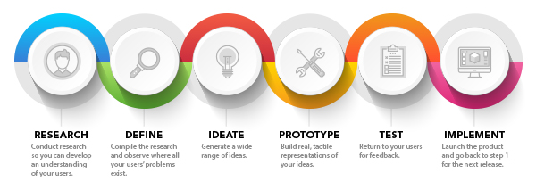
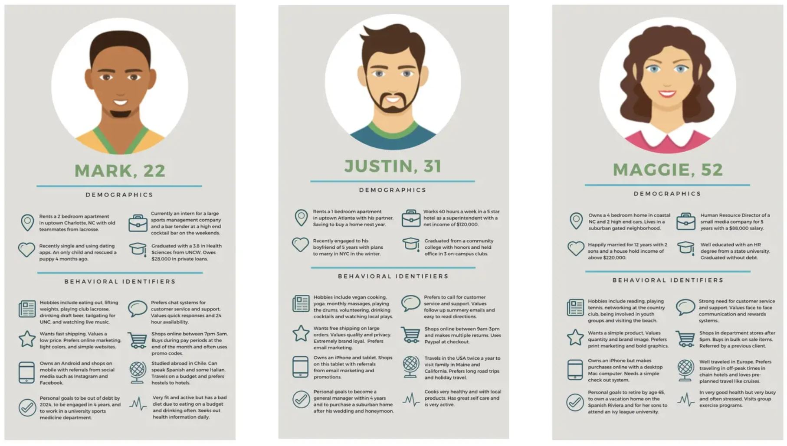
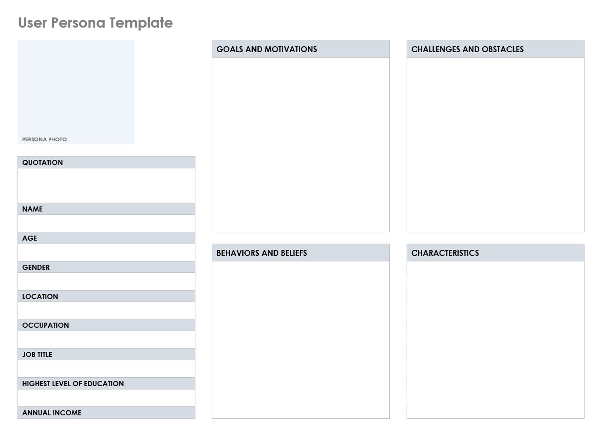

Introduction
user-centered design activity
Throughout this process, please don’t hesitate to ask volunteers for help, clarification, or advice. They are all here to help lead you through this process and support you! The timing listed is only a guideline. If you feel your team is having a strong discussion no need to rush it. Try and get through as far as you can, thinking, collaborating, and creatively designing as a team.
what is user-centered design?
User-centered design is an iterative design process in which designers focus on the users and their needs in each phase of the design process. This leads to highly usable and accessible products.
Step 1
build user personas
Time:
30 minutes
Goal:To empathize, understand, and analyze the people who will use and be affected by this problem area. Create two completed user personas.
Materials:Paper and pencil, User Persona Template, laptop
what is a user persona?
Personas are fictional characters designers used to reflect user types, pinpointing who they are and what they do with products in a given context. Designers create personas from user data, to understand user characteristics, needs, goals, etc. They gain valuable insights into user journeys that inform the design of the solution/product.
why is it important and when do we use one?
You are not the user. While you and your team may use the product – you are not the only users and your experiences, opinions, and needs are different. With personas, we build empathy with target users, focus on their world, share insights/knowledge with other stakeholders to gain consensuses, make defensible decisions reflecting the persona’s/user group’s exact needs, and gauge our designs’ effectiveness through their eyes.
HOW TO
In a professional setting, creating a user persona is based on extensive research and data of the target users.
Using the User Persona Template that is in your packets, create potential plausible users related to the problem area.

Discuss with your team:
Who might be impacted by this problem area and could benefit from a solution? What are their goals, aspirations, challenges, beliefs? Think through both demographic and psychographic characteristics.
We recommend using the paper template, though you are welcome to use a user persona online tool, Xtensio. This is a free tool that gives you a well designed template of characteristics to consider and think through. You will need to create a free account to do this.